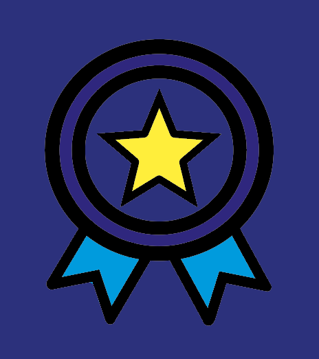

Mijlpalen
Plastic Whale heeft de afgelopen jaren flink wat vooruitgang geboekt in de afgelopen jaren, ik heb de mijlpalen van 2023 op een rijtje gezet.
Mijlpalen van 2023
Door Plastic Whale zijn er in 2023:
●15.630 Vrijwilligers de grachten opgegaan
●639 Evenementen die hebben plaatsgevonden
●7.113 Zakken met plastic afval gevuld
●26.758 recyclebare petflessen verzameld
●13.462 Meubels gemaakt van gerecycled afval